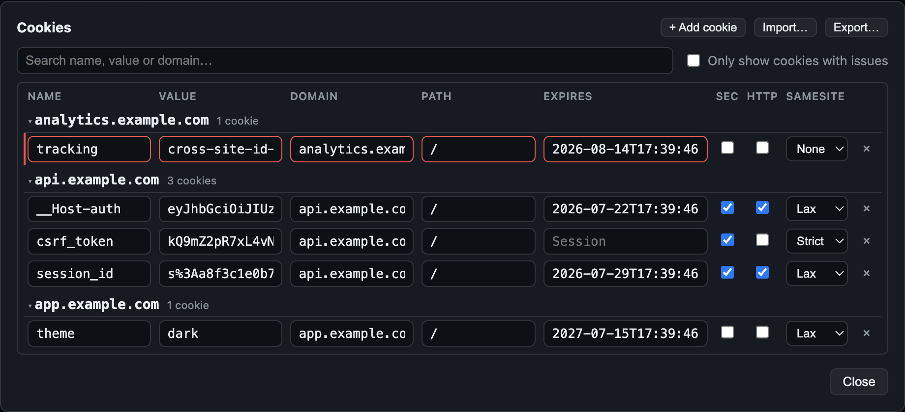
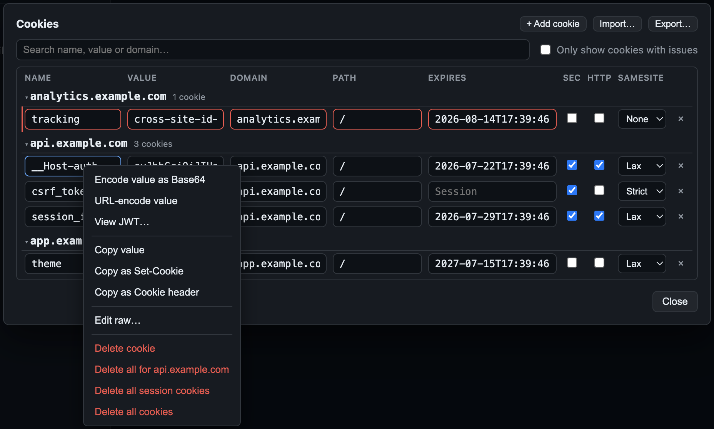
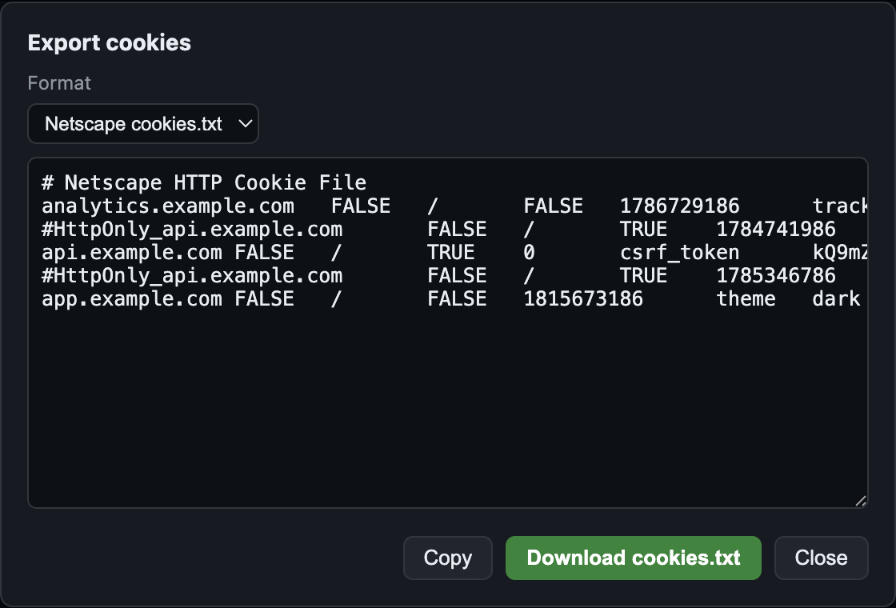

Cookies
Each collection has its own browser-like cookie jar: Set-Cookie headers from
responses are captured automatically, and matching requests send them back — so login
flows, CSRF tokens, and sticky sessions just work. The jar is a local file inside your
collection; like everything else in Freepost, nothing about it leaves your machine.
The cookie jar
The jar behaves the way a browser does, with one deliberate simplification: cookies are
matched by exact host (the Domain attribute is ignored, so a
cookie set by api.example.com is never sent to app.example.com).
Within a host, standard RFC 6265 rules apply:
- Path matching — a cookie with
Path=/apiis sent to/apiand/api/users, not to/apiv2; more specific paths are sent first. - Expiry —
Max-Agewins overExpires; expired cookies are dropped, and a server can delete a cookie by setting it already-expired. Cookies with no expiry are session cookies and live until you clear them. - Secure — cookies marked
Secureare withheld from plainhttp://requests.
The jar persists to .freepost/cookies.json in the collection root — a plain
JSON file with owner-only (0600) permissions, inside the always-git-ignored
.freepost/ folder, alongside the OAuth token
cache. Delete the file and the jar is empty; copy the collection folder and the jar
travels with it.
freepost run uses the same engine and the
same .freepost/cookies.json, so a workflow that logs in with request one and
hits an authenticated endpoint with request two works identically in the desktop app and
in CI.
Opting a request out
Cookies are on by default for every request. To keep a request out of the jar entirely — it neither sends stored cookies nor stores what the response sets — uncheck Send and store cookies under the request's Meta tab (Options section), or set it directly in the frontmatter:
# ---
# description: Health check — must work without a session
# cookies: false
# ---
curl --request GET \
--url "https://api.example.com/healthz"
Only the opt-out is written to disk — a request without a cookies: key has
cookies enabled, so existing files don't change.
The Cookie Manager
Click Cookies in the top bar to open the manager. Cookies are grouped by
domain, searchable, and every attribute is editable inline: name, value, domain, path,
expiry, Secure, HttpOnly, and SameSite
(Strict / Lax / None). Expired cookies stay visible but dimmed until the jar purges them.
Add cookie creates a new row; right-clicking a domain or cookie offers
scoped deletion — one cookie, everything for a domain, all session cookies, or the whole
jar.

tracking cookie is flagged red — SameSite=None without
Secure.
Edits are validated against RFC 6265bis as you type: errors (red)
mark cookies a real user agent would reject, warnings (amber) mark values
that are out of spec but commonly tolerated. The rules include the __Host-
and __Secure- name-prefix requirements, SameSite=None requiring
Secure, and the 4096-byte name+value limit. A
"Only show cookies with issues" filter narrows a big jar down to the
problems.
Value utilities
Right-click a cookie for quick operations on its value:
- Base64 and URL encode / decode in place.
- View JWT — decodes and pretty-prints the header and payload of a JWT value (locally, of course).
- Pretty-print JSON for JSON-shaped values.
- Copy as — the raw value, a full
Set-Cookieline with all attributes, or aCookierequest-header pair. - Edit raw — edit the cookie as a literal
Set-Cookieline, with live parse feedback showing exactly what will be stored.

Import & export
The manager reads and writes four formats:
| Format | Notes |
|---|---|
| JSON | Freepost's own shape, plus common browser-extension export shapes
(expirationDate in seconds, session flags). |
Netscape cookies.txt | The curl/wget format, including
#HttpOnly_-prefixed lines. |
Cookie header | A single a=1; b=2 line — handy
for pasting straight out of devtools. |
Set-Cookie lines | One cookie per line with full attributes. |
Export shows a live preview of the selected format with copy and download buttons. Import auto-detects the format of whatever you paste and lets you either merge into the jar or replace it.

cookies.txt — the live preview updates with
the format, ready for curl -b.cookies.txt and run
curl -b cookies.txt https://api.example.com/me to replay the same session
from a terminal. curl -c output imports back in the other direction.